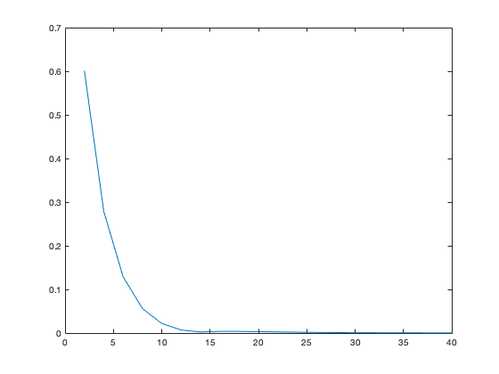

clear
clc
f = @(x) 1 ./ (1 + x .^ 2);
a = - 5;
b = 5;
lebesgueConstanti=zeros(20, 1);
z = linspace(a, b, 10001);
lebesgueEquidistanti(f,z,a,b)
function lebEqui = lebesgueEquidistanti(f,z,a,b)
i = 1;
for n = 2:2:40
ascisse = linspace(a, b, n + 1);
fi = feval(f, ascisse);
y = feval(f, z);
equiY = splineCubicaNaturale(ascisse, fi, z);
error(i,1) = max(abs(equiY - y));
i = i+1;
rst(i,1) = n;
rst(i,2)= max(abs(equiY - y));
end
x = 2:2:40;
plot(x, error);
colNames = {'n','errore'};
tableResult = array2table(rst,...
'VariableNames',colNames);
disp(tableResult);
end
function lebCheb = lebesgueCheby(f,z,a,b)
i = 1;
for n = 2:2:40
ascisse = chebyshev(n, a, b);
fi = feval(f, ascisse);
y = feval(f, z);
chebyY = splineCubicaNaturale(ascisse, fi, z);
error(i,1) = max(abs(chebyY - y));
i = i+1;
rst(i,1) = n;
rst(i,2)= max(abs(chebyY - y));
end
x = 2:2:40;
plot(x, error);
colNames = {'n','errore'};
tableResult = array2table(rst,...
'VariableNames',colNames);
disp(tableResult);
end
function xi = chebyshev(n, a, b)
if n<=0
error('Il numero n inserito deve essere maggiore di 0.')
end
xi = cos((2*[0:n]+1)*pi/(2*n+2));
xi = ((a+b)+(b-a)*xi)/2;
return
end
function y = splineCubicaNaturale(xi, fi, x)
n = length(xi);
splineNaturale = zeros(n, 1)';
widthI = xi(2 : n) - xi(1 : n - 1);
subDiag = (widthI(1 : end - 1)) ./ (widthI(1 : end - 1) + widthI(2 : end));
superDiag = (widthI(2 : end)) ./ (widthI(1 : end - 1) + widthI(2 : end));
divdiff = (fi(2 : n) - fi(1 : n - 1)) ./ widthI;
divdiff = 6 * ((divdiff(2 : end) - divdiff(1 : end - 1)) ./ (xi(3 : end) - xi(1 : end - 2)));
m = sistemaSplineNaturale(subDiag, superDiag, divdiff);
[primaConst, secondaConst] = costantiIntegrazione(m, xi,fi, widthI);
k=2;
for j = 1 : length(x)
for i = 2 : length(xi)
if x(j) <= xi(i)
k = i;
break;
end
end
y(j) = (((x(j) - xi(k - 1)) ^ 3) * m(k) + ...
((xi(k) - x(j)) ^ 3) * m(k - 1)) / ...
(6 * widthI(k - 1)) + secondaConst(k - 1) * ...
(x(j) - xi(k - 1)) + primaConst(k - 1);
end
return
end
function m = sistemaSplineNaturale(subDiag, superDiag, divDiff)
n = length(superDiag) + 1;
u(1) = 2;
l = zeros(1, n - 2);
m = zeros(1, n - 1);
for i = 2 : n - 1
l(i) = subDiag(i) / u(i - 1);
u(i) = 2 - l(i) * superDiag(i - 1);
end
f(1) = divDiff(1);
for i = 2:n - 1
f(i) = divDiff(i) - l(i) * f(i - 1);
end
m(n - 1) = f(n - 1) / u(n - 1);
for j = n - 2 : - 1 : 1
m(j) = (f(j) - superDiag(j + 1) * m(j + 1)) / u(j);
end
m = [0 m 0];
return
end
function [primaConst, secondaConst] = costantiIntegrazione(m, xi, fi, valI)
n = length(xi);
primaConst = zeros(1, n-1);
secondaConst = primaConst;
for i = 2 : n
primaConst(i - 1) = fi(i - 1) - (valI(i - 1) ^ 2) / 6 * m(i - 1);
secondaConst(i - 1) = (fi(i) - fi(i - 1)) / ...
valI(i - 1) - valI(i - 1) / 6 * (m(i) - m(i - 1));
end
return
end
n errore
____________________ ____________________
0.00000000000000e+00 0.00000000000000e+00
2.00000000000000e+00 6.01194546811499e-01
4.00000000000000e+00 2.79313407519679e-01
6.00000000000000e+00 1.29300088354098e-01
8.00000000000000e+00 5.60738528785616e-02
1.00000000000000e+01 2.19738257495818e-02
1.20000000000000e+01 6.90880143772588e-03
1.40000000000000e+01 2.48286347571702e-03
1.60000000000000e+01 3.74540283339586e-03
1.80000000000000e+01 3.71799871804135e-03
2.00000000000000e+01 3.18285764317361e-03
2.20000000000000e+01 2.52965308897213e-03
2.40000000000000e+01 1.92579236161883e-03
2.60000000000000e+01 1.42704786366254e-03
2.80000000000000e+01 1.03905328085696e-03
3.00000000000000e+01 8.24362333267215e-04
3.20000000000000e+01 6.55498681241262e-04
3.40000000000000e+01 5.23708228635011e-04
3.60000000000000e+01 4.21003570779233e-04
3.80000000000000e+01 3.40837796214299e-04
4.00000000000000e+01 2.77976540596248e-04
